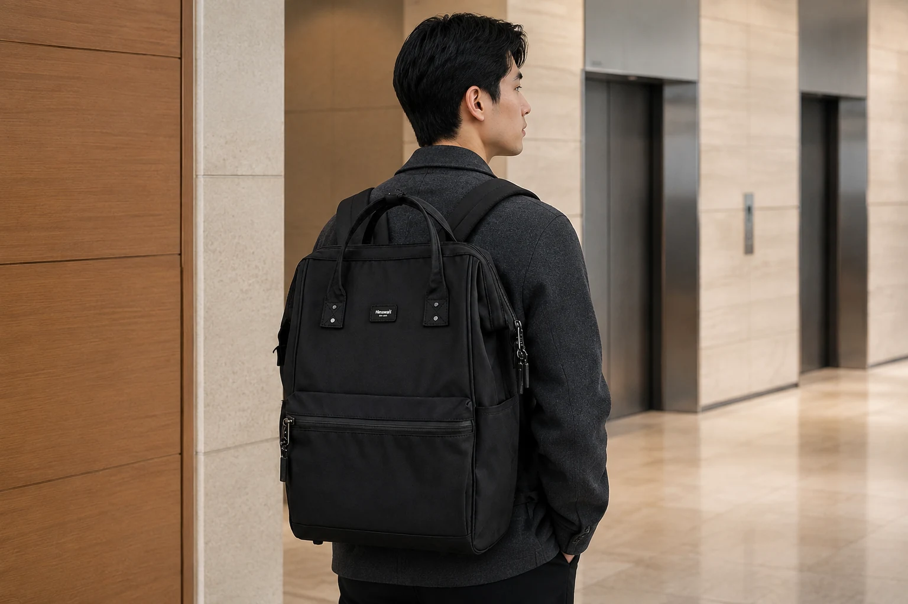

출근 백팩을 책상 앞까지 이어서 고르기

출근 백팩을 고르면 옷차림과 가방의 모습이 먼저 눈에 들어옵니다. 매일 입는 재킷과 잘 연결되는지, 캐주얼한 옷에도 계속 쓰고 싶은지 생각하게 됩니다. 그러나 회사에 도착한 뒤에는 기기를 꺼내고 파일을 펼치며 개인 소지품을 정리해야 합니다. 옷과 함께 보이는 조건과 업무를 시작하는 동작을 같이 살펴볼 만합니다. 어떤 직장인의 가방이 정답이라고 정하기보다 자신의 출퇴근과 책상 앞에서 필요한 묶음을 기준으로 질문을 만들 수 있습니다.
평소 가져가는 업무 도구를 실제로 펼칩니다. 기기와 케이스, 파일의 외형을 확인하고 충전 도구와 개인 짐을 따로 놓습니다. 일하는 장소에 이미 있는 도구라면 계속 운반할 이유가 있는지도 생각하세요. 출입에 쓸 확인 수단과 책상에서만 꺼낼 자료는 사용 순간이 다릅니다. 어떤 물건을 먼저 찾는지 적어두면 가방의 칸 수보다 실제 위치가 중요한 부분을 알 수 있습니다. 출장이 잦은 경우에도 평일의 기본 짐을 먼저 정해야 추가할 범위를 비교하기 쉽습니다.
매일 입는 옷과 실제 부피
옷차림은 자주 쓰는 겉옷을 기준으로 후보와 연결합니다. 제품의 색상명과 실제 옵션 사진을 대조하고 다른 촬영 조건의 이미지가 있으면 함께 볼 수 있습니다. 블랙이나 그레이를 모두에게 직장인 색으로 정할 필요는 없습니다. 실제 근무 장소의 복장 안내가 있다면 그 조건을 확인하고, 그 안에서 계속 사용하고 싶은 조합을 고르면 됩니다. 밝은 옷과 어두운 옷을 번갈아 입는 사람은 두 경우의 조합을 함께 비교할 수 있습니다.
가방에 짐을 담으면 앞면과 옆면의 형태가 달라질 수 있습니다. 빈 제품 사진에서 보았던 외형이 실제 업무 묶음에서도 이어지는지 살펴보세요. 어깨끈이 옷깃과 닿는 면과 가방을 내릴 때의 동작도 조건이 됩니다. 평소 출근복을 입고 메고 벗어볼 수 있다면 자신에게 불편한 부분을 확인합니다. 다른 사람의 착용 비율을 그대로 목표로 두지 않고 현재 몸과 옷, 실제 짐에서 관찰하는 것이 필요합니다.
업무 도구의 수납에서는 본체의 실제 치수와 가방 입구를 대조합니다. 노트북 화면 인치나 파일 규격 이름으로 내부 여유를 정하지 않고 케이스와 여밈까지 포함한 외형을 남깁니다. 다른 파우치를 더한 뒤에도 기기를 꺼낼 수 있는지와 종이의 모서리가 눌리는 면이 없는지 봅니다. 온라인 정보가 부족하다면 확인할 물건의 치수와 사용하는 상태를 판매자에게 전달할 수 있습니다. 어떤 조건을 확인받았는지 알아두면 선택할 질문도 분명해집니다.
Himawari No.1884 블랙 제품 정보를 직장인 백팩의 후보로 참고할 수 있습니다. 제품 정보에 표시된 외부 크기는 가로 30 × 세로 45 × 폭 20cm이며 자신의 평소 짐과 대조할 자료입니다. 내부 치수와 기기 수납 조건은 별도로 확인합니다. 업무 물건을 넣은 뒤 바로 꺼낼 출입 수단과 연락 도구의 위치를 정해볼 수 있습니다. 이름에 출근이나 출장 용도가 적혀 있더라도 실제 하루의 짐과 움직임을 확인해야 선택할 조건이 구체적입니다.

출입구와 책상에서 다른 묶음
교통카드와 출입 수단은 이동 중 사용하고 업무 자료는 도착 후에 꺼냅니다. 두 묶음이 같은 위치에 겹쳐 있으면 필요한 순간마다 다른 자료를 함께 움직일 수 있습니다. 사용 뒤 돌아갈 위치까지 정한 닫힌 곳에서 관리하면 됩니다. 가방을 바꾼 날에는 새 위치에서 실제로 꺼내보고 지갑이나 다른 소지품이 따라 나오지 않는지 확인하세요. 위치 이름을 고정하기보다 반복할 동작을 기준으로 정하는 방식입니다.
책상에 도착하면 기기와 파일, 필기구를 쓰는 순서로 꺼낼 수 있습니다. 가방을 다른 곳에 두어야 하는 근무 공간이라면 한 번에 필요한 묶음을 가져올 구성이 도움이 됩니다. 파우치를 너무 많이 나누면 회수할 개수도 늘어나므로 실제 사용하는 범위를 기준으로 정합니다. 충전 도구를 연결했거나 개인 소품을 별도 공간에 둔 경우에는 퇴근할 때 확인할 위치가 하나 더 생깁니다. 책상 위와 가방 안의 물건을 구분하면 빠뜨릴 범위가 줄어듭니다.
근무 중 외부 회의나 다른 장소로 이동한다면 계속 필요한 자료만 다시 담는 과정이 있습니다. 회사에서만 쓸 것을 가져갈지 업무 안내에 따라 판단하고, 밖에서 확인할 자료는 찾을 수 있는 위치에 둡니다. 같은 가방을 하루 종일 쓴다고 내용물을 항상 그대로 유지할 필요는 없습니다. 목적지가 바뀌는 순간에 꺼낼 묶음을 생각하면 가방 전체를 회의 자리에서 펼치지 않아도 됩니다. 다른 사람에게 받은 자료는 자신의 문서와 구분해서 보관할 수 있습니다.
퇴근 때의 추가 짐
퇴근할 때는 오전에 꺼냈던 도구가 돌아왔는지 확인하고 새로 받은 물건을 봅니다. 자료가 늘거나 개인 물건을 더 가져갈 경우에는 기존 소지품의 위치가 밀리지 않는지 살펴보세요. 여밈이 자연스럽게 닫히는지와 종이의 모서리가 입구 밖에 남지 않았는지도 확인합니다. 다음 이동에서 교통카드나 연락 도구를 계속 쓸 예정이라면 깊은 곳으로 옮기지 않고 찾을 위치를 유지할 수 있습니다. 하루 사이의 변화도 가방을 고르는 조건입니다.
출장 일정이 생겼다면 평일 묶음에 무엇을 더해야 하는지 구분합니다. 옷과 개인 용기를 추가한 뒤에도 회의 자료를 꺼낼 수 있는지 실제로 대조하세요. 캐리어와 함께 쓸 경우에는 제품이 안내한 결합 방식과 실제 장비를 확인하고 없는 기능을 임의로 가정하지 않습니다. 추가 짐이 많으면 백팩에는 업무 묶음을 남기고 다른 여행 짐을 나누는 선택도 가능합니다. 출근과 출장에서 모두 같은 크기가 맞을 것이라고 정하지 않는 방식입니다.
가방 선택을 마칠 때에는 계속 반복할 동작을 다시 봅니다. 옷차림과 함께 쓰고 싶은지, 업무 도구를 담은 상태에서 메고 내릴 수 있는지, 책상에서 필요한 묶음을 찾을 수 있는지 확인합니다. 상담이나 수선, 관리에 관한 안내도 제품을 계속 사용할 조건으로 읽을 수 있습니다. 직장인 백팩의 기준은 색 하나나 노트북이라는 상품 이름에 모이지 않습니다. 자신의 출입과 업무 준비, 퇴근의 짐까지 연결한 후보라면 매일 어떤 이유로 사용할지 구체적으로 판단할 수 있습니다.